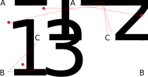

TP1 - Mission lunaire
Objectifs
- S'initier à la programmation en C++.
- Pratiquer l'encapsulation et concevoir des types abstraits de données.
- Gérer la mémoire.
- Implémenter et appliquer des structures de données simples en C++.
- Résoudre un problème simple.
- Analyser la complexité temporelle d'un algorithme.
Problématique
Une mission d'exploration lunaire est étudiée dans ce projet. Un robot doit se poser sur la lune afin d'effectuer un certain nombre de missions. Chaque mission (à effectuer dans l'ordre) peut être réalisée à différents endroits. Le but est de choisir pour chaque mission l'endroit où la réaliser afin de minimiser la distance que le robot doit parcourir. Vous devrez écrire un programme tp1 qui prend en entrée les différentes missions à effectuer (avec les différents lieux où les missions peuvent être effectuées), ainsi que les différents points d'atterrissage. Le programme devra retourner pour chaque point d'atterrissage les emplacements où effectuer chacune des missions.
Structure du programme
Un squelette de départ est disponible dans tp1.zip.
- Ce squelette vous est fourni pour vous aider à vous concentrer sur l'essentiel du TP1.
- Vous êtes libres de l'utiliser ou non.
- Vous pouvez y effectuer toutes les modifications que vous souhaitez ou jugez nécessaires.
- Ce squelette vise d'abord la simplicité pour obtenir rapidement un programme fonctionnel.
Syntaxe d'appel du programme tp1
Votre programme doit pouvoir être lancé en ligne de commande avec la syntaxe suivante :
./tp1 carte.txt [departs.txt]
où carte.txt est le nom du fichier contenant les données de la carte à utiliser, et departs.txt (optionnel) est le nom d'un fichier contenant les points de départ possibles.
Si departs.txt est spécifié, alors votre programme doit lire dans departs.txt au moyen d'un flux de lecture C++ std::ifstream. Sinon, votre programme doit lire dans l'entrée standard (stdin) au moyen du flux d'entrée C++ std::cin. À noter que le squelette implémente déjà cela.
Format d'un fichier de carte
Un fichier de carte contient la liste des emplacements possibles pour chaque projet à réaliser. Le fichier commence par un nombre indiquant le nombre de missions puis sur chaque ligne, la description de ces missions en commençant par le nom de la mission, le nombre de sites possibles pour effectuer la mission et la position de chacun de ces sites.
Par exemple, le fichier carte3.txt ci-bas.
3 A 3 (0,0) (10,0) (5,10) B 3 (0,10) (15,0) (20,10) C 3 (5,5) (15,5) (20,5)
Cet exemple correspond visuellement à la carte suivante.

Format d'un fichier de requêtes
Votre programme tp1 doit calculer pour chaque point d'atterrissage spécifié par departs.txt (ou dans std::cin si departs.txt n'est pas spécifié) le chemin le plus court pour effectuer toutes les missions dans l'ordre (A, puis B, puis C, etc...). Les points de départ sont tout simplement des coordonnées.
Par exemple, le fichier departs3.txt ci-bas.
(1,3) (6,1) (3,9) (20,2)
Format de sortie
Pour chaque point de départ, votre programme doit écrire sur la sortie standard std::cout les numéros de mission pour minimiser la distance à parcourir.
Le résultat de la commande ./tp1 carte3.txt departs3.txt produit le résultat suivant.
2 2 2 2 2 2 3 1 1 2 2 2
Algorithme naif pour n = 3
Pour chaque point de départ, on peut calculer la distance pour chaque triplet ai, bj, ck où ai représente la i eme mission A, Bj la j eme mission B et Ck la k eme mission C.
Algorithme naif :
TopOrder(Mission A = { a1, a2, ..., ama }, Mission B = { b1, b2, ..., bmb }, Mission C = { c1, c2, ..., cmc }, Point depart):
mindist ← +∞
result ← {0, 0, 0}
pour toutes les missions ai dans A
pour toutes les missions bj dans B
pour toutes les missions ck dans C
si distance(depart, ai) + distance(ai, bj) + distance(bj, ck) < mindist
mindist ← distance(depart, ai) + distance(ai, bj) + distance(bj, ck)
result ← {i, j, k}
retourner result
Amelioration 1
Nous pouvons remarquer que la distance minimal pour effectuer toutes les missions correspond a trouver une mission ai qui minimise l'équation :
distance(depart, ai) + topOder({ b1, b2, ..., bmb }, { c1, c2, ..., cmc }, ai)
La seconde partie de l'équation ne dépendant pas du point de départ, nous pouvons précalculer cette valeur afin de ne pas avoir a la recalculer pour chaque nouveau point de départ.
Contraintes
Bibliothèques permises
Vous devez implémenter et utiliser votre propre classe générique Tableau selon le squelette dans tableau.h du laboratoire 3. Pour l'instant, l'utilisation des conteneurs de la bibliothèque standard de C++ (ex.: std::vector ou std::list) n'est pas permise. Ce sera permis plus tard dans le cours.
Environnement de développement
Votre TP1 doit pouvoir être compilé avec g++ version 12 (version installée sur le serveur java.labunix.uqam.ca).
Taille des équipes
Vous pouvez faire ce travail en équipe de 1 ou 2. Toutefois, tous les membres de l'équipe doivent contribuer à l'ensemble du travail et non à seulement quelques parties. Le travail d'équipe vise à favoriser les discussions et l'entraide. Le travail d'équipe ne vise pas à réduire la tâche. Ainsi, se diviser la tâche en deux n'est pas une méthode de travail d'équipe appropriée dans ce cours. La participation inadéquate des membres de l'équipe peut être considérée comme du plagiat. Le professeur et le correcteur pourront sélectionner quelques équipes au hasard afin de vérifier que tous les membres sont capables d'expliquer l'ensemble du travail.
Tests
Pour vous aider à vérifier que votre programme fonctionne correctement, un outil de vérification est fourni ICI.Bien que vous puissiez créer vos propres fichiers de carte, voici un script pour les créer automatiquement : ICI.
Remise
Vous devez remettre votre travail au plus tard le 20 octobre 2021 à 23h59m59s.
Fichiers à remettre:
- tp1-src.zip : fichier ZIP contenant tous vos fichiers sources (*.{h,cpp}), votre fichier Makefile et rapport.pdf.
-
Votre fichier rapport.pdf contenu dans le zip contient :
- Analyse de la complexité temporelle (pire cas) en notation grand O de l'algorithme naif avec et sans l'optimisation 1.
Les complexités temporelles devraient être exprimées en fonction d'une ou plusieurs variables dont :- n = nombre de missions ;
- m = nombre de sites pour chaque mission (nous considérerons que toutes les missions ont le même nombre de sites) ;
- d = nombre de positions de départ.
- Analyse de la complexité temporelle (pire cas) en notation grand O de l'algorithme naif avec et sans l'optimisation 1.
Évaluation
Ce travail pratique vaut 15% de la note finale.
Grille de correction
| Critère | Description | Points |
|---|---|---|
| A. | Respect des directives pour la remise
|
/ 2.0 |
| B. | Appréciation générale
|
/ 3.0 |
| C. | Fonctionnement correct Le programme retourne les bonnes réponses pour :
|
/ 6.0 |
| D. | Complexité
|
/ 3.0 |
| E. | Rapport / Analyse des algorithmes
|
/ 2.0 |
| Total | 16 | |
| F. | Votre programme fonctionne avec un nombre quelconque de missions. (boni).
Avertissements : Implémenter cette capacité peut demander beaucoup de temps pour seulement 2 points bonis. |
/ 2.0 |
| G. | La complexité de votre programme est bien meilleure que la solution triviale + amélioration 1. (boni).
Avertissements : Implémenter cette capacité peut demander beaucoup de temps pour seulement 2 points bonis. |
/ 2.0 |
| Note maximale : | 20/16 |
Pénalités
- Pour les cas problématiques, jusqu'à 2 points peuvent être retranchés pour la qualité de la langue et de la présentation.
- Une pénalité de 5 points s'applique si vous utilisez un conteneur de la bibliothèque standard de C++ plutôt que d'utiliser votre propre structure de données Tableau (tableau.h).
- Retard: 5% de la note maximale par heure de retard.